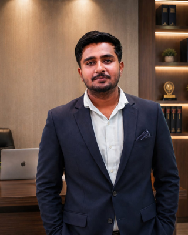

2024
UNDERGRADUATE
Bachelor of Commerce (B.Com)
Government First Grade College, Sandur · VSKU Ballari
80.00%FINAL SCORE
I’m Niranjan N.M. — a commerce graduate with hands-on audit assistant experience, building a career grounded in accuracy, integrity and continuous learning.

Audit Assistant · Commerce Professional
I bring a practical foundation in audit support and commerce, paired with a strong commitment to professional development.
With four years of experience as an Audit Assistant at a CA firm in Sandur, I’ve built an appreciation for careful work, dependable teamwork and the importance of getting the details right. I completed my B.Com in 2024 and cleared the CMA Foundation in December 2023. I am currently pursuing CA / CMA Intermediate.
My goal is to contribute to a team where I can put my knowledge to work, strengthen my skills and grow into greater responsibility.
Practical exposure, professional discipline and a focus on doing the work right.
Worked for four years as an Audit Assistant, gaining professional exposure in a chartered accountancy firm environment.
Specific client engagements, tools and responsibilities can be added here to make this section more detailed.
Academic milestones that shaped my understanding of commerce and business.
Government First Grade College, Sandur · VSKU Ballari
SES Vidyamandira, Sandur · PU Board, Bangalore
Krupa Nilaya High School, Sandur · KSEEB
Professional studies and participation certificates that reflect curiosity across finance, governance and public knowledge.
Cleared in December 2023.
FOUNDATION CLEAREDCurrently pursuing further professional studies.
IN PROGRESSThe habits and interests I bring into a professional environment.
Take ownership of learning and personal development.
↗Value clear communication and constructive collaboration.
↗Enjoy supporting others and contributing to shared goals.
↗Keep curiosity alive through reading and writing.
↗Open to opportunities where I can contribute my experience, keep learning and grow with a team.